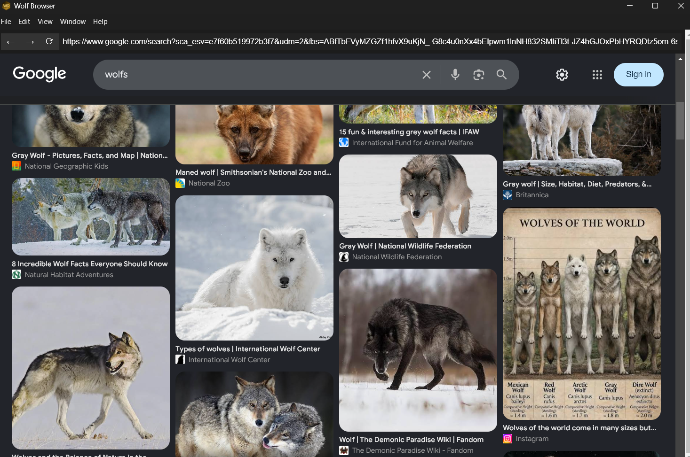

Built-in Ad Blocker
Wolf Browser blocks ads without the websites even knowing, which allows you to read news and go on ad-heavy websites without you getting a popup asking you to turn off your ad blocker.
Our custom browser built for Privacy. Designed to provide a fast, private, and simple browsing expearience.

Wolf Browser blocks ads without the websites even knowing, which allows you to read news and go on ad-heavy websites without you getting a popup asking you to turn off your ad blocker.
Wolf Browser is designed to not save anything, no search history, no cookies, nothing. This ensures anything you do doesnt exist when you close the browser.
Wolf Browser uses much less RAM than mainstream browsers such as Chrome, Edge, and Opera. This means when searching on google, you only use ~300MB of RAM.